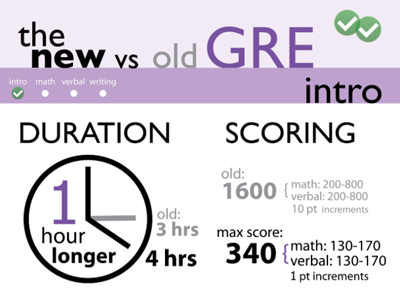
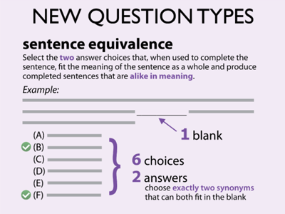
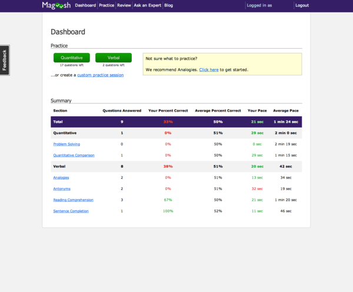
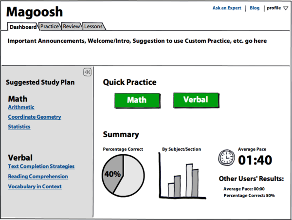
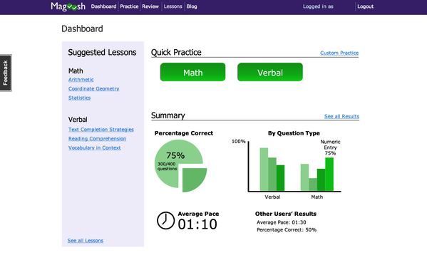
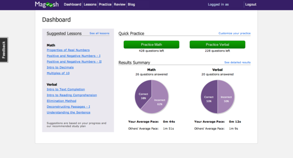

User Experience & Design Internship
May - December 2011
Berkeley, CA
Overview
Created a consistent and intuitive user experience across all Magoosh test prep web application products through multiple iterations of rapid prototyping and over ten hours of user testing
Collaborated with web developers to design and implement visual layout of landing pages and web application
Supported Magoosh marketing team through graphic design (infographics, ads, web graphics)
Preparation
To prepare for this role, I read the following books:
- Don't Make Me Think by Steven Krug
- Designing the Obvious by Robert Hoekman Jr.
- Rework by Jason Fried and David Heinemeier Hansson
Projects
1. New GRE Infographic
In August 2011, the Graduate Record Exam (GRE) underwent a huge revision. In order to communicate these changes in the revised GRE to potential test-takers, I created an infographic for Magoosh, a GRE test preparation startup. Creating this infographic involved several weeks of sketching and iterations. At each iteration, I showed the infographic to fellow Magoosh co-workers to make sure all the information was clearly communicated. Anything that was unclear or didn't make sense was redone. This is the third and final iteration. Click on the screens below to see the full infographic.
{kind=link}


2. Dashboard Redesign
During the summer of 2011, Magoosh added video lessons to our GRE test preparation product. In order to integrate these changes, I was tasked with conducting user tests to discover the best way to integrate lessons (and lesson suggestions) into the product dashboard. After eleven hours of user testing, I learned:
- Users heavily use the two green buttons to start practice sessions.
- Users wanted to see a visual depiction of their progress, and especially liked pie charts.
- There was a disconnect between the parts of the dashboard and the rest of the product.
- Keep the green quick start buttons so users can continue to quickly start practice sessions.
- More clear visualization of user's study progress.
- Connect the parts of the dashboard to related product pages with small corner links.
Old Dashboard
The old dashboard for Magoosh GRE Test Prep. Note that at this point, the product did not have video lessons. Users complained of clutteredness, but found detailed statistics in the table to be useful.

Low-Fi Mockup
Low-fidelity mockup of a possible dashboard integrating suggested lessons, created with Balsamiq Mockups, based on the results of of 5 early user tests. This mockup was tested with 5 more users.

High-Fi Mockup
A high-fidelity Dashboard mockup I created in Adobe Photoshop based on user testing results. A reminder of what we discovered through user testing:
- Users heavily use the two green buttons to start practice sessions.
- Users wanted to see a visual depiction of their progress, and especially liked pie charts.
- There was a disconnect between the parts of the dashboard and the rest of the product.

The New Dashboard
Incorporates the changes from previous iterations, derived from user feedback. The new dashboard features:
- Suggested Lessons: An easy way for users to find relevant video lessons and follow a video curriculum.
- Progress Charts: A visual way for users to track their own progress and compare with other users.
- Improved Navigation: The new dashboard features links that allow users to easily navigate to the various sections of Magoosh GRE Prep.

What I Learned
- Value of iterative design and team feedback
- Effective ad strategy and design
- Strategies for cost-effective and informational usability testing
- Synthesizing user feedback and generating product insights
- Basic HTML/CSS